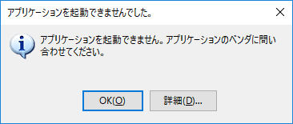

(※ 2018 年 2 月 20 日に Microsoft Japan Visual Studio Support Team Blog に公開した情報のアーカイブです。)
こんにちは、Visual Studio サポート チームです。
今回は、ClickOnce アプリケーションのインストールや更新後に発生する場合がある、アプリケーション起動時のエラーとその対処方法についてご案内します。
当ブログの下記の記事でも ClickOnce アプリケーションの起動時のエラーについて取り扱っていますが、今回は、この他によくお問い合わせをいただく既知の問題についてご案内しています。
ClickOnce 起動時のエラーについて
https://social.msdn.microsoft.com/Forums/ja-JP/5d6aa0ca-a6ce-4bc5-adc5-142d537b6af2/clickonce-?forum=visualstudiosupportteamja
現象
ClickOnce アプリケーションをインストールした場合や更新した場合に、以下のようなエラー ダイアログが表示され、アプリケーションの起動に失敗する場合があります。

“詳細” ボタンを押下すると、エラーの状況に応じて以下のようなエラーの詳細が記録されている場合があります。
※ 当記事の原因に該当する場合、多くのケースではスタック トレース上に ComponentStore.ActivateApplication が現れますが、スタック トレースの内容など詳細は .NET Framework のバージョンにより異なる可能性がございます。また、代表的なエラー メッセージを挙げており、すべてのパターンを網羅するものではございませんので予めご了承ください。
必要なレジストリ キーが見つからなかった場合
1 | この操作中に次のエラーが検出されました。 |
ClickOnce キャッシュのマニフェスト ファイルが破損していた場合
1 | この操作中に次のエラーが検出されました。 |
ClickOnce キャッシュのファイルが部分的に欠落している場合
1 | この操作中に次のエラーが検出されました。 |
ClickOnce キャッシュの EXE ファイルが破損していた場合
1 | この操作中に次のエラーが検出されました。 |
原因
ClickOnce はアプリケーションの情報や構成を、ユーザー プロファイル配下のファイルとレジストリの両方で管理しています。
ユーザー プロファイル : %userprofile%\AppData\Local\Apps\2.0
レジストリ キー : HKEY_CURRENT_USER\Software\Classes\Software\Microsoft\Windows\CurrentVersion\Deployment\SideBySide\2.0
何らかの理由によりこれらの整合性に問題が生じた場合、ClickOnce アプリケーションはエラーにより起動できない状態となります。ファイルとレジストリの整合性に問題が生じる状況となる原因としては、例えば下記のような状況が考えられます。
- ClickOnce アプリケーションのインストールまたは更新中に、電源障害などによる予期しないシャットダウンが発生した場合
- ClickOnce アプリケーションのインストールまたは更新中に、コンピューターの電源を切るなどによる予期しないログオフが発生した場合
- ClickOnce アプリケーションのインストールまたは更新中に、ClickOnce ローダー プロセス (dfsvc.exe) が強制終了した場合や未知の問題などで異常終了した場合
- バックアップ ソフトウェアなどの復元機能で、レジストリもしくはファイルのみに対して復元が行われた場合
- 移動プロファイルが使用されている場合 (ClickOnce は移動プロファイルをサポートしていません。)
- ウィルス対策ソフトウェアなどが、ファイルやレジストリのアクセスを阻害した場合や問題があるファイルとして除去された場合
整合性に問題が生じる状況に至った原因は、ファイルとレジストリの整合性に問題が生じた後に得られる情報 (ClickOnce ログや、ユーザー プロファイルやレジストリ配下の ClickOnce キャッシュ一式など) から調査を進めることは困難です。このため、ファイルやレジストリに不整合が生じる事象を再現させ、引き金となったプロセスの処理などを解析して特定する必要があります。もし特定の手順で問題が再現できる場合には、Visual Studio サポート チームで調査させていただきますので弊社へお問い合わせください。
なお、この種のエラーについては ClickOnce アプリケーション側に何等かの問題があるわけではなく、対象の環境で利用されているサードパーティ製品の動作や予期しない操作などに起因していることがほとんどです。アプリケーション側の実装や配置の仕方で対処することはできませんので、この問題が発生した場合には後述の対処方法を実施して復旧することをご検討ください。万が一対処方法を実施して解決しない場合には、ClickOnce キャッシュの破損以外の原因が考えられるため、下記の情報を取得していただき弊社へお問い合わせください。
- ClickOnce 詳細ログ (https://docs.microsoft.com/ja-jp/visualstudio/deployment/how-to-specify-verbose-log-files-for-clickonce-deployments) でご案内しております。)
- %userprofile%\AppData\Local\Apps\2.0 フォルダー配下一式
- HKEY_CURRENT_USER\Software\Classes\Software\Microsoft\Windows\CurrentVersion\Deployment\SideBySide\2.0 配下のレジストリ キー一式
対処方法について
オフラインでも実行可能なアプリケーションの場合は、アプリケーションを一度アンインストールして再度インストールを行ってください。オンラインのみで実行可能なアプリケーションの場合、もくしは上記で解消されない場合は、ユーザー プロファイル配下の ClickOnce キャッシュを削除してください。(レジストリ キーを削除する必要はありません。)
なお、恐れ入りますが特定のアプリケーションのみの ClickOnce キャッシュを選択して削除することは出来ません。ClickOnce キャッシュの削除後は、問題が発生しているアプリケーション以外の他のアプリケーションの再インストールも必要となりますが、各アプリケーションの起動を試みた際に自動的に再インストールが行われますのでご安心ください。再インストールが必要となる場合は、インストール確認画面が表示される場合がございますので、この点はご注意ください。
参考情報
英語の公開技術情報となりますが、ClickOnce アプリケーションの更新の失敗についての原因と対処については以下の KB でもご案内しておりますので、あわせてご確認ください。
ClickOnce Application Fails to Update
https://support.microsoft.com/en-us/help/2713442/clickonce-application-fails-to-update
なお、弊社では ClickOnce アプリケーションの堅牢性の向上について継続して取り組んでおり、.NET Framework 4.7 以降では ClickOnce キャッシュの破損を検出した場合に自動的に復元を試みる機能を追加しております。現状では ClickOnce キャッシュの破損により発生するエラーのすべてを回復できるものではございませんが、より新しいバージョンの .NET Framework をご利用いただくこともご検討いただけますと幸いです。ClickOnce キャッシュ破損の回復機能については下記のブログでご案内しておりますので、あわせてご確認ください。
Announcing the .NET Framework 4.7 - Store Corruption Recovery
https://blogs.msdn.microsoft.com/dotnet/2017/04/05/announcing-the-net-framework-4-7/
本ブログの内容は弊社の公式見解として保証されるものではなく、開発・運用時の参考情報としてご活用いただくことを目的としています。もし公式な見解が必要な場合は、弊社ドキュメント (https://docs.microsoft.com や https://support.microsoft.com) をご参照いただくか、もしくは私共サポートまでお問い合わせください。